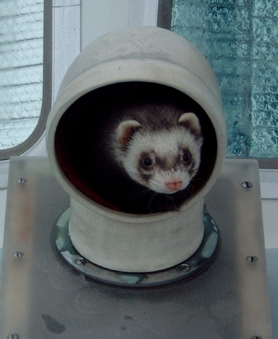

Portal | Kat Litter | Tales | Lectures | Eye Candy | Accreations | Kat Who? | Poke
posted: January 9, 2004
The infamous Taz and Dex hit the deck....



Taz has an obsession with the dorade boxes (ventilators designed to let air in and out and keep the water mostly on the outside of the boat) and attempts to play some mutant form of hide-and-seek in them whenever possible. This would be funnier if his butt didn't keep getting stuck. or would it? Dexter, on the other hand, prefers the wide open spaces of the deck. From which he can throw himself backward into the canal. Nothing stinks like a ferret wet with canal water (don't drink that sludge: I know where it's been!) I put up with this silliness, so it must be love. (Either that, or I've finally gone stark, raving bonkers: your call.)
Back to top of this page, please.
Back to Gallery Index.
© 2004 Design and text: M. Kathleen Huffine/Kat Richardson. Photos: Jim Richardson. All rights reserved.